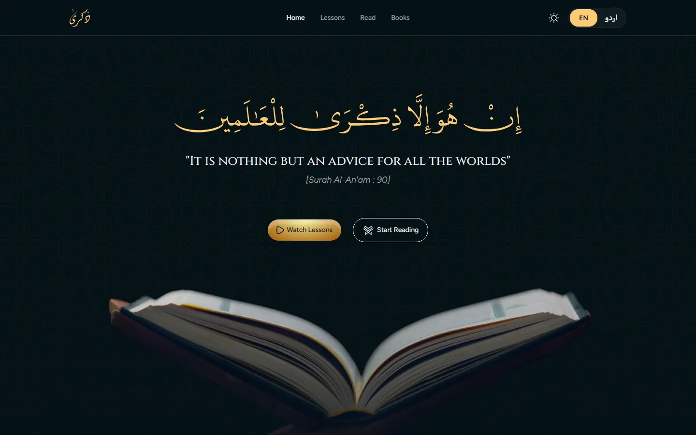
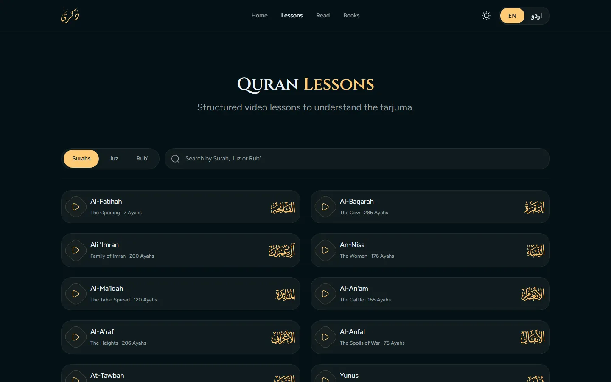
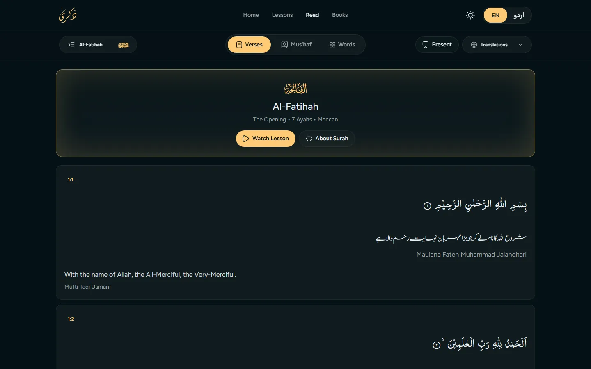
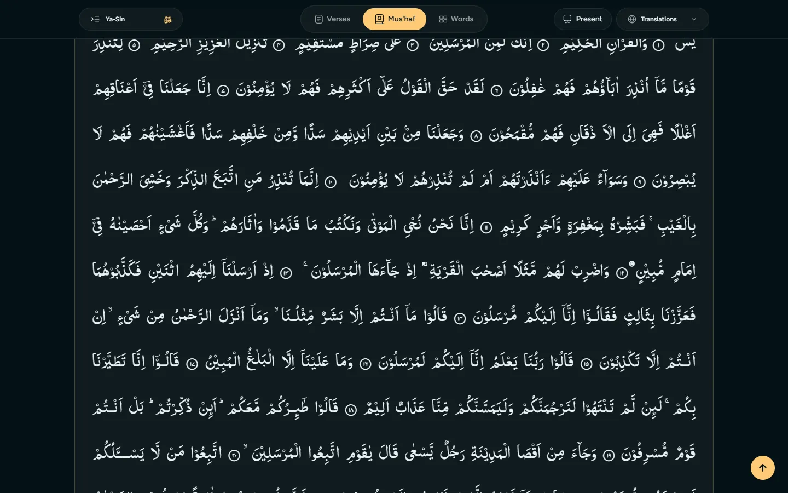
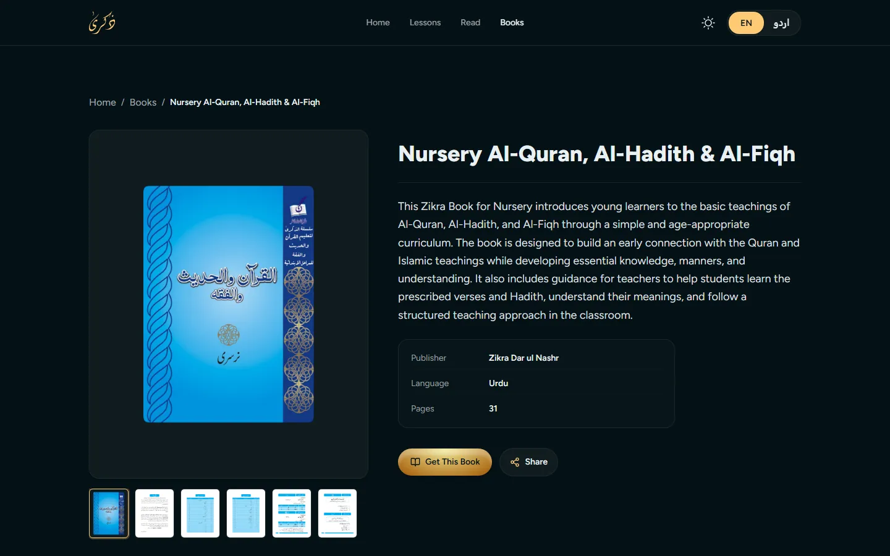
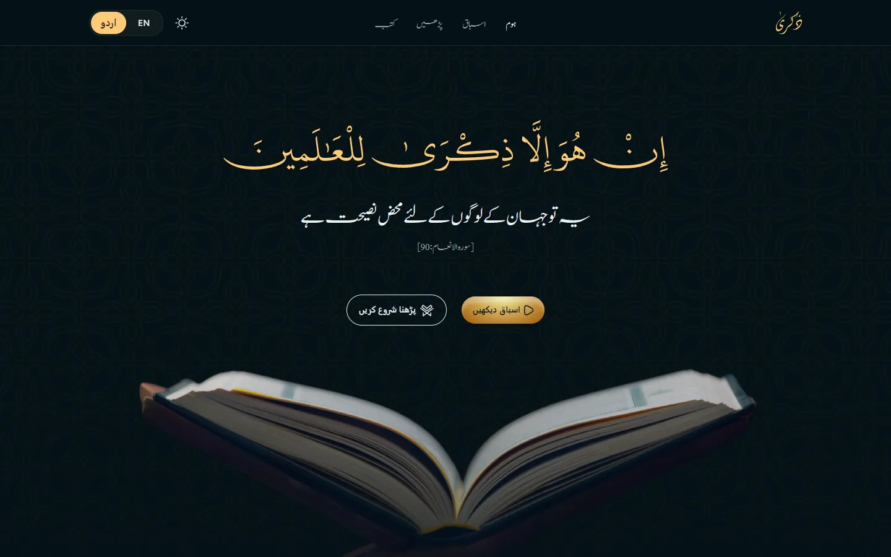

Tech Stack
Technologies Used
A fast single-page app with code-split routes, so each lesson or surah loads only what it needs
React
YouTube Embeds
Zikra Dar ul Nashr publishes Urdu tarjuma lessons and children's Islamic books. We rebuilt their website into one bilingual platform where learners can watch the full Quran as short video lessons, read every surah with Urdu and English translations, and browse the Zikra book series. The whole site switches between English and Urdu (right-to-left) and supports light and dark themes.
Back To Projects View Live Project





A fast single-page app with code-split routes, so each lesson or surah loads only what it needs
Three ways into the Quran: watch, read, and learn with children's books
558 tarjuma lessons covering all 114 surahs. Browse by Surah, Juz or Rub', search, and move through rukus with previous and next.
Arabic text with Urdu (Maulana Fateh Muhammad Jalandhari) and English (Mufti Taqi Usmani) translations, and a button to jump to the matching lesson.
Switch from verses to a continuous Mus'haf page or word-by-word view, or open Present mode for full-screen teaching.
9 children's books from Nursery to 5th Class, each with a page preview gallery, publisher details and a way to order.
How the content is organised behind the scenes
Every surah, juz, rub' and ruku is mapped once, so lessons and the reader share the same structure and link to each other.
Zikra's existing YouTube lessons are matched to each ruku and played inside the site, so the client keeps uploading where they already do.
Every label has an English and an Urdu version. Choosing Urdu flips the whole layout to right-to-left with Nastaliq type.
The size of the content now available in one place
Zikra's lessons, translations and books used to be spread across YouTube, social media and print. Now a learner can open any surah, read the translation, and watch the lesson for that exact ruku in a couple of clicks, in the language they read best. Teachers get a Present mode for the classroom, and schools can browse the full book series before ordering. Because lessons still come from YouTube, the team keeps their existing workflow and every new upload can be linked into the site.
Let's discuss how we can build something great together.
Start Your Project